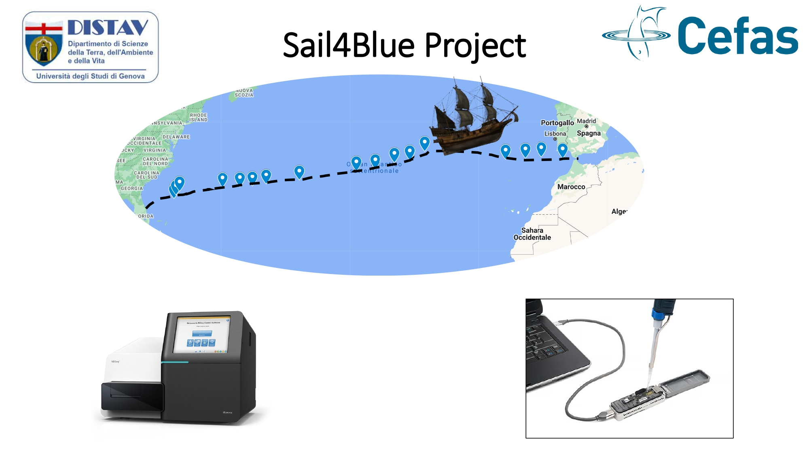
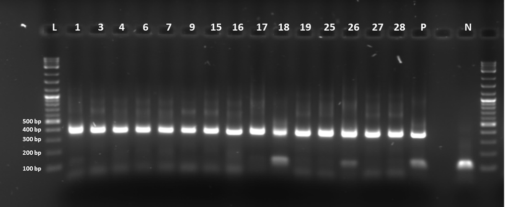
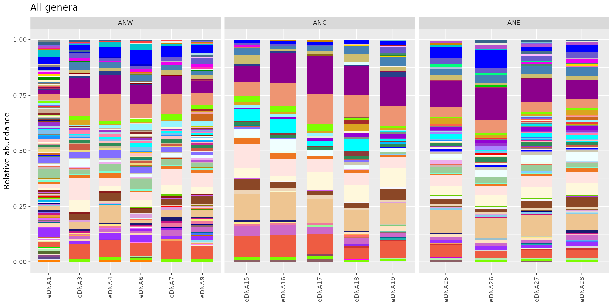
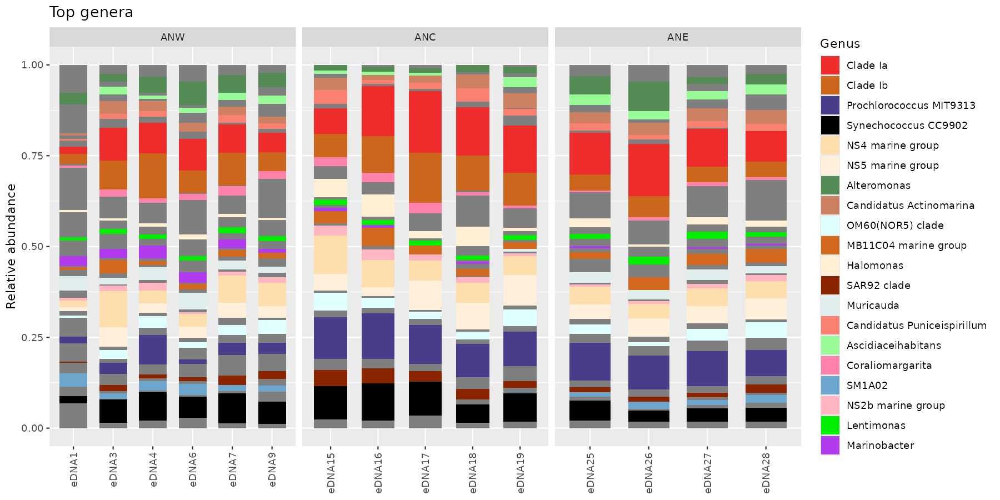

Analisi biostatistica / Biostatistics
SEA4BLUE Project
Il materiale di questa pagina segue il flusso della lezione originale, ma in forma statica: leggiamo l’oggetto phyloseq, osserviamo i grafici già preparati e facciamo i passaggi uno alla volta.
Prima di aprire RStudio, scaricate il dataset e decomprimetelo nella vostra cartella Downloads.


Da dove arrivano i dati
I campioni provengono dal transetto oceanico SEA4BLUE. L’idea è semplice: seguire la comunità microbica lungo la rotta, confrontare le zone del transetto e vedere come cambiano ricchezza, composizione e ordinamento.
Come partire in R
Se avete estratto lo zip in ~/Downloads/Sea4Blue, la working directory deve puntare lì prima di leggere il file .rds.
# Puliamo la sessione
rm(list = ls())
# Carichiamo i pacchetti necessari
library(phyloseq)
library(ggplot2)
library(dplyr)
library(maps)
library(ggrepel)
library(ggside)
library(metagenomeSeq)
library(vegan)
# Impostiamo la cartella di lavoro dove avete estratto Sea4Blue.zip
setwd("~/Downloads/Sea4Blue")
# Carichiamo l'oggetto phyloseq già pronto
ps <- readRDS("phyloseq.rds")
# Controlliamo che tutto sia a posto
ps
sample_data(ps)
head(t(otu_table(ps)))Se avete salvato il dataset in un’altra posizione, cambiate solo il percorso di setwd(). Per esempio: setwd("~/Desktop/Sea4Blue").
Mappa del transetto
Questa è la prima vista utile: mostra i siti di campionamento lungo il transetto e aiuta a leggere tutti i grafici successivi.
# Convertiamo il metadata in tabella
samdf <- as.data.frame(sample_data(ps))
# Ordiniamo i campioni lungo il transetto
samdf <- samdf[order(samdf$NavigationDay), ]
# Recuperiamo la mappa del mondo
world <- map_data("world")
# Disegniamo il transetto
ggplot() +
geom_polygon(
data = world,
aes(x = long, y = lat, group = group),
fill = "grey90",
color = "grey60"
) +
geom_path(
data = samdf,
aes(x = Longitude, y = Latitude, group = 1),
color = "black",
linewidth = 1
) +
geom_point(
data = samdf,
aes(x = Longitude, y = Latitude, color = Zone),
size = 3
) +
coord_quickmap(xlim = c(-85, -5), ylim = c(20, 45)) +
labs(x = "Longitudine", y = "Latitudine", color = "Zona") +
theme_minimal()
Profondità di sequenziamento e rarefaction curves
Qui conviene ragionare in due passaggi: prima guardiamo quante reads ha ogni campione, poi verifichiamo se la profondità di sequenziamento è sufficiente per confrontare i campioni in modo equo.
# Usiamo i conteggi grezzi per stimare la profondità di sequenziamento
depth_df <- data.frame(
Sample = sample_names(ps),
Reads = sample_sums(ps),
Zone = sample_data(ps)$Zone,
SampleName = sample_data(ps)$SampleName
)
# Un controllo rapido della libreria
ggplot(depth_df, aes(x = reorder(SampleName, Reads), y = Reads, fill = Zone)) +
geom_col(width = 0.8) +
coord_flip() +
scale_fill_manual(values = c(ANW = "#4280fc", ANC = "#ffb452", ANE = "#f7170a"), na.translate = FALSE) +
labs(x = NULL, y = "Reads", title = "Library size") +
theme_bw()
# Fissiamo il seed per rendere riproducibile il downsampling
set.seed(42)
# Teniamo solo i campioni con zona assegnata
ps_rarefaction <- subset_samples(ps, !is.na(Zone))
# Funzione originale, resa esplicita passo per passo
calculate_rarefaction_curves <- function(psdata, measures, depths) {
estimate_rarified_richness <- function(psdata, measures, depth) {
if (max(sample_sums(psdata)) < depth) return(NULL)
psdata <- prune_samples(sample_sums(psdata) >= depth, psdata)
rarified_psdata <- rarefy_even_depth(psdata, depth, verbose = FALSE)
alpha_diversity <- estimate_richness(rarified_psdata, measures = measures)
melt(
as.matrix(alpha_diversity),
varnames = c("Sample", "Measure"),
value.name = "Alpha_diversity"
)
}
names(depths) <- depths
rarefaction_curve_data <- plyr::ldply(
depths,
estimate_rarified_richness,
psdata = psdata,
measures = measures,
.id = "Depth"
)
rarefaction_curve_data$Depth <- as.numeric(levels(rarefaction_curve_data$Depth))[rarefaction_curve_data$Depth]
rarefaction_curve_data
}
# Calcoliamo le curve
rarefaction_curve_data <- calculate_rarefaction_curves(
ps_rarefaction,
c("Observed"),
rep(c(1, 10, 100, 1000, 1:100 * 10000), each = 10)
)
# Riassumiamo i valori per il grafico
rarefaction_curve_data_summary <- plyr::ddply(
rarefaction_curve_data,
c("Depth", "Sample", "Measure"),
summarise,
Alpha_diversity_mean = mean(Alpha_diversity),
Alpha_diversity_sd = sd(Alpha_diversity)
)
rarefaction_curve_data_summary_verbose <- merge(
rarefaction_curve_data_summary,
data.frame(sample_data(ps_rarefaction)),
by.x = "Sample",
by.y = "row.names"
)
# Disegniamo le curve colorandole per zona
ggplot(
data = rarefaction_curve_data_summary_verbose,
aes(x = Depth, y = Alpha_diversity_mean, group = Sample, color = Zone)
) +
geom_line(linewidth = 1) +
geom_point(size = 2.5) +
geom_label_repel(
data = rarefaction_curve_data_summary_verbose |>
dplyr::group_by(Sample) |>
dplyr::filter(Alpha_diversity_mean == max(Alpha_diversity_mean)),
aes(label = SampleName),
color = "black",
show.legend = FALSE
) +
scale_color_manual(values = c(ANW = "#4280fc", ANC = "#ffb452", ANE = "#f7170a")) +
labs(x = "Profondità", y = "ASV osservate", title = "Rarefaction Curves") +
theme_bw()
Normalizzazione
Qui facciamo i passaggi che servono davvero per la lezione: togliamo i taxa indesiderati, filtriamo i singletons, escludiamo i controlli e applichiamo CSS.
# Partiamo dall'oggetto iniziale
phyloseq_obj <- ps
# Rimuoviamo cloroplasti e mitocondri
phyloseq_obj <- phyloseq_obj |>
subset_taxa((is.na(Family) | Family != "Mitochondria") & (is.na(Order) | Order != "Chloroplast"))
# Teniamo solo i taxa osservati più di una volta
phyloseq_obj <- prune_taxa(taxa_sums(phyloseq_obj) > 1, phyloseq_obj)
# Escludiamo i controlli
phyloseq_obj <- subset_samples(
phyloseq_obj,
!is.na(Zone) & SampleName != "Positive" & SampleName != "Negative"
)
# Convertiamo in oggetto metagenomeSeq e applichiamo CSS
data.metagenomeSeq <- phyloseq_to_metagenomeSeq(phyloseq_obj)
p <- cumNormStat(data.metagenomeSeq)
data.cumnorm <- cumNorm(data.metagenomeSeq, p = p)
data.CSS <- MRcounts(data.cumnorm, norm = TRUE, log = TRUE)
# Ricreiamo l'oggetto phyloseq normalizzato
phyloseq_obj_css <- phyloseq_obj
otu_table(phyloseq_obj_css) <- otu_table(data.CSS, taxa_are_rows = TRUE)
# Rinominamo i campioni con il nome leggibile
sample_names(phyloseq_obj_css) <- sample_data(phyloseq_obj_css)$SampleNameAlpha diversity
In questa pagina teniamo la stessa logica della lezione originale: prima arrotondiamo i conteggi normalizzati, poi stimiamo la richness e infine la leggiamo lungo il transetto.
# Arrotondiamo i conteggi normalizzati per la richness
phyloseq_obj_css_round <- phyloseq_obj_css
otu_table(phyloseq_obj_css_round) <- round(otu_table(phyloseq_obj_css), digits = 0)
# Calcoliamo la richness osservata
p1 <- plot_richness(
phyloseq_obj_css_round,
x = "Longitude",
color = "Zone",
measures = c("Observed")
)
# Ordiniamo le zone come nel corso
newSTorder <- c("ANW", "ANC", "ANE")
p1$data$Zone <- factor(as.character(p1$data$Zone), levels = newSTorder)
# Disegno finale
ggplot(p1$data, aes(Longitude, value)) +
theme_bw() +
theme(plot.title = element_text(hjust = 0.5), ggside.panel.scale.y = 0.4) +
geom_point(aes(colour = Zone), alpha = 0.45) +
scale_color_manual(values = c("#4280fc", "#ffb452", "#f7170a", "#000000")) +
geom_ysideboxplot(aes(x = Zone, y = value, colour = Zone), orientation = "x") +
scale_ysidex_discrete() +
geom_smooth(aes(colour = variable), linewidth = 1.5) +
ylab("Richness")
# Salviamo la richness nei metadata: ci servirà dopo
sample_data(phyloseq_obj_css)$Richness <- p1$data$valueBeta diversity
Qui ci fermiamo alla PCoA su Bray-Curtis. La lezione originale mostrava anche il controllo sulle dispersioni, ma in questa versione didattica lo togliamo per mantenere il flusso più lineare.
# Calcoliamo l'ordinamento Bray-Curtis
otu.ord <- ordinate(phyloseq_obj_css, "PCoA", distance = "bray")
# Disegniamo la PCoA con le etichette
plot_ordination(phyloseq_obj_css, otu.ord, color = "Zone", axes = c(1, 2)) +
scale_color_manual(values = c("#4280fc", "#ffb452", "#f7170a")) +
geom_point(size = 3) +
geom_text_repel(aes(label = SampleName), max.overlaps = Inf, show.legend = FALSE) +
labs(title = "Beta Diversity based on Bray-Curtis") +
theme_bw()
Composizione della comunità e RDA
Prima guardiamo la composizione tassonomica a livello di genere, poi chiudiamo con una RDA vincolata dalla longitudine e dalla richness.
# Convertiamo i conteggi in percentuale
physeq_perc <- transform_sample_counts(phyloseq_obj_css, function(x) 100 * x / sum(x))
# Agreghiamo al livello di genere
glom <- tax_glom(physeq_perc, taxrank = "Genus")
data_glom <- psmelt(glom)
data_glom$Zone <- factor(as.character(data_glom$Zone), levels = c("ANW", "ANC", "ANE"))
# Palette molto ampia per i generi
color <- grDevices::colors()[grep("gr(a|e)y", grDevices::colors(), invert = TRUE)]
# Barplot di tutti i generi
ggplot(data = data_glom, aes(x = Sample, y = Abundance, fill = Genus)) +
facet_grid(~Zone, scales = "free") +
geom_bar(stat = "identity", position = "fill", width = 0.7) +
scale_fill_manual(values = sample(color, length(unique(data_glom$Genus)))) +
theme(axis.text.x = element_text(angle = 90, vjust = 0.5, hjust = 1), legend.position = "none")
# Identifichiamo i taxa più abbondanti
genus.sum <- tapply(taxa_sums(glom), tax_table(glom)[, "Genus"], sum, na.rm = TRUE)
topGenera <- names(sort(genus.sum, TRUE))[1:20]
# Stesso grafico, ma con i top genera evidenziati
ggplot(data = data_glom, aes(x = Sample, y = Abundance, fill = Genus)) +
facet_grid(~Zone, scales = "free") +
geom_bar(stat = "identity", position = "fill", width = 0.7) +
scale_fill_manual(values = sample(color, length(unique(data_glom$Genus))), breaks = topGenera) +
theme(axis.text.x = element_text(angle = 90, vjust = 0.5, hjust = 1))# RDA sulla comunità
RDA <- ordinate(phyloseq_obj_css ~ Richness + Longitude, "RDA")
# Primo grafico: campioni colorati per zona
p2 <- plot_ordination(phyloseq_obj_css, RDA, color = "Zone") +
theme_bw() +
geom_text_repel(aes(label = SampleName, color = Zone), max.overlaps = Inf, show.legend = FALSE) +
geom_point(size = 4) +
scale_color_manual(values = c("#4280fc", "#ffb452", "#f7170a"))
# Aggiungiamo le frecce delle variabili esplicative
arrowmat <- vegan::scores(RDA, display = "bp")
arrowdf <- data.frame(labels = rownames(arrowmat), arrowmat)
arrowhead <- grid::arrow(length = grid::unit(0.05, "npc"))
p2 +
geom_segment(
aes(xend = RDA1, yend = RDA2, x = 0, y = 0),
data = arrowdf,
color = "black",
arrow = arrowhead,
linewidth = 1
) +
geom_text(
aes(x = 1.7 * RDA1, y = 1.7 * RDA2, label = labels),
data = arrowdf,
size = 4
)
Nota finale
Questo tutorial resta statico apposta: il codice è mostrato per essere letto e discusso, mentre le figure sono già pronte. In aula, il punto è capire la sequenza logica dell’analisi, non perdere tempo con output rumorosi o blocchi troppo automatici.
SEA4BLUE Project
This page follows the original lesson flow, but in a static format: we inspect the ready-made phyloseq object, read the plots, and go step by step.
Before opening RStudio, download the dataset and unzip it into your Downloads folder.
Where the data come from
The samples come from the SEA4BLUE ocean transect. The goal is simple: follow the microbial community along the route, compare the transect zones, and inspect how richness, composition, and ordination change.
Getting started in R
If you extracted the zip into ~/Downloads/Sea4Blue, your working directory must point there before reading the .rds file.
# Clear the workspace
rm(list = ls())
# Load the required packages
library(phyloseq)
library(ggplot2)
library(dplyr)
library(maps)
library(ggrepel)
library(ggside)
library(metagenomeSeq)
library(vegan)
# Set the working directory where Sea4Blue.zip was extracted
setwd("~/Downloads/Sea4Blue")
# Load the ready-to-use phyloseq object
ps <- readRDS("phyloseq.rds")
# Quick sanity checks
ps
sample_data(ps)
head(t(otu_table(ps)))If you stored the dataset somewhere else, change only the setwd() path. For example: setwd("~/Desktop/Sea4Blue").
Transect map
This is the first useful view: it shows the sampling sites along the transect and makes the later plots easier to read.
# Turn sample metadata into a data frame
samdf <- as.data.frame(sample_data(ps))
# Order samples along the transect
samdf <- samdf[order(samdf$NavigationDay), ]
# Retrieve the world map
world <- map_data("world")
# Plot the transect
ggplot() +
geom_polygon(
data = world,
aes(x = long, y = lat, group = group),
fill = "grey90",
color = "grey60"
) +
geom_path(
data = samdf,
aes(x = Longitude, y = Latitude, group = 1),
color = "black",
linewidth = 1
) +
geom_point(
data = samdf,
aes(x = Longitude, y = Latitude, color = Zone),
size = 3
) +
coord_quickmap(xlim = c(-85, -5), ylim = c(20, 45)) +
labs(x = "Longitude", y = "Latitude", color = "Zone") +
theme_minimal()
Sequencing depth and rarefaction curves
Here we work in two stages: first we inspect how many reads each sample has, then we check whether sequencing depth is sufficient for fair comparisons.
# Use raw counts to inspect sequencing depth
depth_df <- data.frame(
Sample = sample_names(ps),
Reads = sample_sums(ps),
Zone = sample_data(ps)$Zone,
SampleName = sample_data(ps)$SampleName
)
# Quick library-size check
ggplot(depth_df, aes(x = reorder(SampleName, Reads), y = Reads, fill = Zone)) +
geom_col(width = 0.8) +
coord_flip() +
scale_fill_manual(values = c(ANW = "#4280fc", ANC = "#ffb452", ANE = "#f7170a"), na.translate = FALSE) +
labs(x = NULL, y = "Reads", title = "Library size") +
theme_bw()
# Fix the seed to keep the downsampling reproducible
set.seed(42)
# Keep only samples with an assigned zone
ps_rarefaction <- subset_samples(ps, !is.na(Zone))
# Original logic, written out step by step
calculate_rarefaction_curves <- function(psdata, measures, depths) {
estimate_rarified_richness <- function(psdata, measures, depth) {
if (max(sample_sums(psdata)) < depth) return(NULL)
psdata <- prune_samples(sample_sums(psdata) >= depth, psdata)
rarified_psdata <- rarefy_even_depth(psdata, depth, verbose = FALSE)
alpha_diversity <- estimate_richness(rarified_psdata, measures = measures)
melt(
as.matrix(alpha_diversity),
varnames = c("Sample", "Measure"),
value.name = "Alpha_diversity"
)
}
names(depths) <- depths
rarefaction_curve_data <- plyr::ldply(
depths,
estimate_rarified_richness,
psdata = psdata,
measures = measures,
.id = "Depth"
)
rarefaction_curve_data$Depth <- as.numeric(levels(rarefaction_curve_data$Depth))[rarefaction_curve_data$Depth]
rarefaction_curve_data
}
# Compute the curves
rarefaction_curve_data <- calculate_rarefaction_curves(
ps_rarefaction,
c("Observed"),
rep(c(1, 10, 100, 1000, 1:100 * 10000), each = 10)
)
# Summarize values for plotting
rarefaction_curve_data_summary <- plyr::ddply(
rarefaction_curve_data,
c("Depth", "Sample", "Measure"),
summarise,
Alpha_diversity_mean = mean(Alpha_diversity),
Alpha_diversity_sd = sd(Alpha_diversity)
)
rarefaction_curve_data_summary_verbose <- merge(
rarefaction_curve_data_summary,
data.frame(sample_data(ps_rarefaction)),
by.x = "Sample",
by.y = "row.names"
)
# Plot the curves colored by zone
ggplot(
data = rarefaction_curve_data_summary_verbose,
aes(x = Depth, y = Alpha_diversity_mean, group = Sample, color = Zone)
) +
geom_line(linewidth = 1) +
geom_point(size = 2.5) +
geom_label_repel(
data = rarefaction_curve_data_summary_verbose |>
dplyr::group_by(Sample) |>
dplyr::filter(Alpha_diversity_mean == max(Alpha_diversity_mean)),
aes(label = SampleName),
color = "black",
show.legend = FALSE
) +
scale_color_manual(values = c(ANW = "#4280fc", ANC = "#ffb452", ANE = "#f7170a")) +
labs(x = "Depth", y = "Observed ASVs", title = "Rarefaction Curves") +
theme_bw()
Normalization
Here we keep only the steps that matter for the lesson: remove unwanted taxa, filter singletons, exclude controls, and apply CSS.
# Start from the initial object
phyloseq_obj <- ps
# Remove chloroplasts and mitochondria
phyloseq_obj <- phyloseq_obj |>
subset_taxa((is.na(Family) | Family != "Mitochondria") & (is.na(Order) | Order != "Chloroplast"))
# Keep only taxa observed more than once
phyloseq_obj <- prune_taxa(taxa_sums(phyloseq_obj) > 1, phyloseq_obj)
# Remove controls
phyloseq_obj <- subset_samples(
phyloseq_obj,
!is.na(Zone) & SampleName != "Positive" & SampleName != "Negative"
)
# Convert to metagenomeSeq and apply CSS
data.metagenomeSeq <- phyloseq_to_metagenomeSeq(phyloseq_obj)
p <- cumNormStat(data.metagenomeSeq)
data.cumnorm <- cumNorm(data.metagenomeSeq, p = p)
data.CSS <- MRcounts(data.cumnorm, norm = TRUE, log = TRUE)
# Rebuild the normalized phyloseq object
phyloseq_obj_css <- phyloseq_obj
otu_table(phyloseq_obj_css) <- otu_table(data.CSS, taxa_are_rows = TRUE)
# Rename samples with their readable sample names
sample_names(phyloseq_obj_css) <- sample_data(phyloseq_obj_css)$SampleNameAlpha diversity
We keep the same logic used in the original lesson: round the normalized counts, estimate richness, and read it along the transect.
# Round normalized counts for richness
phyloseq_obj_css_round <- phyloseq_obj_css
otu_table(phyloseq_obj_css_round) <- round(otu_table(phyloseq_obj_css), digits = 0)
# Compute observed richness
p1 <- plot_richness(
phyloseq_obj_css_round,
x = "Longitude",
color = "Zone",
measures = c("Observed")
)
# Keep the same zone order as in the course
newSTorder <- c("ANW", "ANC", "ANE")
p1$data$Zone <- factor(as.character(p1$data$Zone), levels = newSTorder)
# Final figure
ggplot(p1$data, aes(Longitude, value)) +
theme_bw() +
theme(plot.title = element_text(hjust = 0.5), ggside.panel.scale.y = 0.4) +
geom_point(aes(colour = Zone), alpha = 0.45) +
scale_color_manual(values = c("#4280fc", "#ffb452", "#f7170a", "#000000")) +
geom_ysideboxplot(aes(x = Zone, y = value, colour = Zone), orientation = "x") +
scale_ysidex_discrete() +
geom_smooth(aes(colour = variable), linewidth = 1.5) +
ylab("Richness")
# Save richness in the metadata for later use
sample_data(phyloseq_obj_css)$Richness <- p1$data$valueBeta diversity
Here we stop at the PCoA on Bray-Curtis. The original lesson also discussed dispersion checks, but this static version keeps the flow simpler.
# Compute the Bray-Curtis ordination
otu.ord <- ordinate(phyloseq_obj_css, "PCoA", distance = "bray")
# Draw the PCoA with labels
plot_ordination(phyloseq_obj_css, otu.ord, color = "Zone", axes = c(1, 2)) +
scale_color_manual(values = c("#4280fc", "#ffb452", "#f7170a")) +
geom_point(size = 3) +
geom_text_repel(aes(label = SampleName), max.overlaps = Inf, show.legend = FALSE) +
labs(title = "Beta Diversity based on Bray-Curtis") +
theme_bw()
Community composition and RDA
First we look at the taxonomic composition at genus level, then we close with an RDA constrained by longitude and richness.
# Convert counts to percentages
physeq_perc <- transform_sample_counts(phyloseq_obj_css, function(x) 100 * x / sum(x))
# Aggregate at genus level
glom <- tax_glom(physeq_perc, taxrank = "Genus")
data_glom <- psmelt(glom)
data_glom$Zone <- factor(as.character(data_glom$Zone), levels = c("ANW", "ANC", "ANE"))
# Large palette for genera
color <- grDevices::colors()[grep("gr(a|e)y", grDevices::colors(), invert = TRUE)]
# All genera
ggplot(data = data_glom, aes(x = Sample, y = Abundance, fill = Genus)) +
facet_grid(~Zone, scales = "free") +
geom_bar(stat = "identity", position = "fill", width = 0.7) +
scale_fill_manual(values = sample(color, length(unique(data_glom$Genus)))) +
theme(axis.text.x = element_text(angle = 90, vjust = 0.5, hjust = 1), legend.position = "none")# Identify the most abundant taxa
genus.sum <- tapply(taxa_sums(glom), tax_table(glom)[, "Genus"], sum, na.rm = TRUE)
topGenera <- names(sort(genus.sum, TRUE))[1:20]
# Same plot, highlighting the top genera
ggplot(data = data_glom, aes(x = Sample, y = Abundance, fill = Genus)) +
facet_grid(~Zone, scales = "free") +
geom_bar(stat = "identity", position = "fill", width = 0.7) +
scale_fill_manual(values = sample(color, length(unique(data_glom$Genus))), breaks = topGenera) +
theme(axis.text.x = element_text(angle = 90, vjust = 0.5, hjust = 1))
# RDA on the community
RDA <- ordinate(phyloseq_obj_css ~ Richness + Longitude, "RDA")
# First plot: samples colored by zone
p2 <- plot_ordination(phyloseq_obj_css, RDA, color = "Zone") +
theme_bw() +
geom_text_repel(aes(label = SampleName, color = Zone), max.overlaps = Inf, show.legend = FALSE) +
geom_point(size = 4) +
scale_color_manual(values = c("#4280fc", "#ffb452", "#f7170a"))
# Add arrows for explanatory variables
arrowmat <- vegan::scores(RDA, display = "bp")
arrowdf <- data.frame(labels = rownames(arrowmat), arrowmat)
arrowhead <- grid::arrow(length = grid::unit(0.05, "npc"))
p2 +
geom_segment(
aes(xend = RDA1, yend = RDA2, x = 0, y = 0),
data = arrowdf,
color = "black",
arrow = arrowhead,
linewidth = 1
) +
geom_text(
aes(x = 1.7 * RDA1, y = 1.7 * RDA2, label = labels),
data = arrowdf,
size = 4
)
Final note
This tutorial is intentionally static: the code is there to be read and discussed, while the figures are already ready to use. The point in class is to understand the analytical sequence, not to spend time on noisy output or overly automated steps.